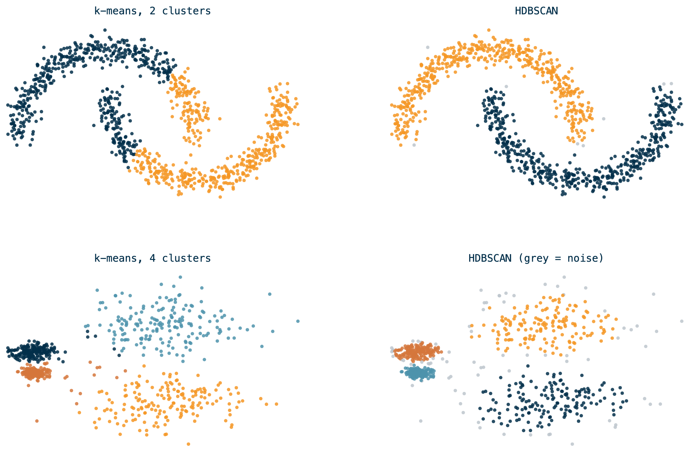
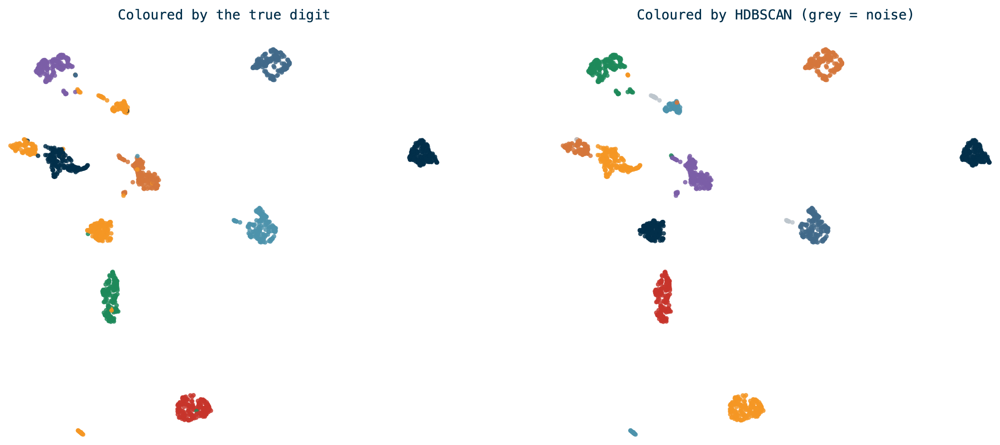

Customer Segmentation
Clustering, dimension reduction, UMAP and HDBSCAN
Where we are
Rules found what sells together. Labels predicted one outcome.
Segmentation asks a different question: who are these customers, and how many kinds are there?
Unlabeled learning
There is no Y. No right answer to train against, so nothing to score yourself against at the end.
Supervised
You know the answer for past rows. The model learns to reproduce it.
Did this visit include fuel?
Unsupervised
You have only the features. The model looks for structure.
What kinds of shoppers are there?
That freedom is the danger: an algorithm will always return groups, whether or not they mean anything.
Clustering
Partitioning a set of objects into groups so that objects in the same group are more similar to each other than to those in other groups.
The analyst defines “similar.” That choice — which features, on what scale — decides the answer more than the algorithm does.
Clusters are a hypothesis, not a finding. You still have to show they’re stable and that someone can act on them.
Picking an algorithm
k-means vs. HDBSCAN

Illustrative: make_moons and make_blobs from scikit-learn, not customer data.
What the picture shows
k-means
- You must pick k in advance
- Cuts by distance to a centre, so it only finds round blobs
- Every point gets a cluster, outliers included
HDBSCAN
- Finds the number of clusters itself
- Follows density, so shapes can be anything
- Points in sparse regions are labeled noise, not forced
For customers, “I don’t know how many segments there are” and “some shoppers fit no segment” are both honest, so HDBSCAN fits the problem.
The two knobs
min_cluster_size— the smallest group you’ll accept as a segment. Larger values are more robust on noisy data.min_samples— how dense a neighborhood must be for a point to count as core. Higher means more points called noise. Defaults tomin_cluster_size; tune it second.
For a customer product, set min_cluster_size to your privacy floor: no segment smaller than the number of shoppers you’re willing to report on.
Too many dimensions
The curse of dimensionality
With 20 behavioral features per shopper, distance stops meaning much: in high dimensions, everything is far from everything, and “nearest neighbor” loses its edge over the average point.
- Distances concentrate, so density looks flat
- Sparse space, so clusters have no room to be dense
- Compute cost grows with every column
Dimension reduction maps the data to fewer dimensions while keeping what matters: which points are near which.
UMAP
Uniform Manifold Approximation and Projection.
- Find each point’s nearest neighbors in the original high-dimensional space.
- Build a graph of those neighbor relationships.
- Lay the graph out in 2 to 5 dimensions, nudging points until the layout preserves the neighborhoods.
n_neighbors
Small keeps local detail. Large keeps the global shape.
min_dist
How tightly points may pack. Low for clustering, higher for a readable picture.
n_components
Output dimensions. 5 to cluster, 2 to draw.
UMAP on handwritten digits

64 pixel columns, projected to 2. HDBSCAN found 12 clusters with 1.8% noise — close to the 10 true digits, splitting a couple of them.
Illustrative: scikit-learn digits, not customer data.
Why digits are the honest test
We know the answer here: 10 digits. So we can see the failure modes you won’t see on customers:
- Some digits split into two clusters (different handwriting styles)
- Some sit next to each other (4, 7 and 9 overlap)
- A few points land in no cluster
On customer data nobody hands you the digits. That’s why stability checks replace accuracy.
Segmenting customers
The pipeline
1 Features
~20 per shopper
→
2 Scale
log, standardize
→
3 UMAP → 5-D
→
4 HDBSCAN
→
5 Name them
profile each group
Scaling matters more than it looks. Dollars run to the hundreds and trip counts to single digits, so without scaling, spend decides every cluster.
Features for a C-Store shopper
- Frequency and value: trips, basket total, items per trip
- Timing: daypart shares, weekday vs. weekend
- Mission: fuel, fountain and food, packaged drinks, snacks, tobacco
- Price and payment: discount use, credit vs. debit
Leave store brand out of the features. Otherwise you cluster by where people shop, then “discover” that each brand has its own shoppers.
Pick the unit of analysis first
One row per what? For segments, it’s one row per shopper, not per basket — but over what span?
One week
A trial run split the segments almost entirely by daypart, because most shoppers made a single trip.
A quarter or more
Enough trips per shopper that frequency, mission and timing can vary within a row.
Example conclusions — from a one-store, one-week sample, not a finished analysis.
Naming the segments
The model returns 0, 1, 2, -1. You turn those into something a client can use:
- Profile each cluster against the features that built it.
- Find what makes it different from the average, not what’s biggest in it.
- Name it for the behavior: Morning commuters, Fill-up only.
- Check the name survives a new quarter of data.
-1 is a real answer. “Unsegmented” shoppers are a group too, and often a big one.
At scale: Databricks and PySpark
Spark builds the table, not the clusters
UMAP and HDBSCAN are single-machine libraries. Spark ML has k-means, bisecting k-means and Gaussian mixtures — no HDBSCAN.
PySpark
millions of lines → one row per shopper
→
One machine
UMAP + HDBSCAN on the shopper table
→
PySpark
join labels back, profile, write Delta
The heavy lifting is the feature build, and that’s the part Spark is for.
Why the handoff is fine
The transaction data is big. The shopper table isn’t.
Millions
of transaction lines, across stores and quarters. Spark territory.
~100k rows
one per shopper, with ~20 columns. A few MB in memory.
A table that fits in a driver’s memory doesn’t need a cluster to cluster it. Use Spark to get there, then stop.
In a Databricks notebook
%pip installis notebook-scoped: it installs on the driver for this session.toPandas()moves everything to the driver. Check the row count first.- Serverless compute gives you a modest driver. If it won’t fit, sample.
Making conclusions
What you can claim from a segmentation, and what you can’t
How you know it worked
Without a Y, you check stability and usefulness:
- Noise share. If 60% is noise, your features or knobs are wrong.
- Across random seeds. Do the same shoppers land together each run?
- Across time. Does last quarter’s segment still describe the same people?
- Against a simple baseline. Does it beat RFM (recency, frequency, monetary) buckets?
- The client test. Can someone name an action per segment? If not, it’s decoration.
What segmentation can’t do
- It won’t tell you why anyone belongs to a group.
- It won’t predict what a shopper does next. That’s a labeled model.
- It will give you groups even from noise, so a result alone proves nothing.
- Segments drift: refit on a schedule and expect the boundaries to move.
Your turn
Name three segments you expect in your C-Store data.
What features would separate them? What would a store do differently for each? If the model can’t find them, what does that tell you?